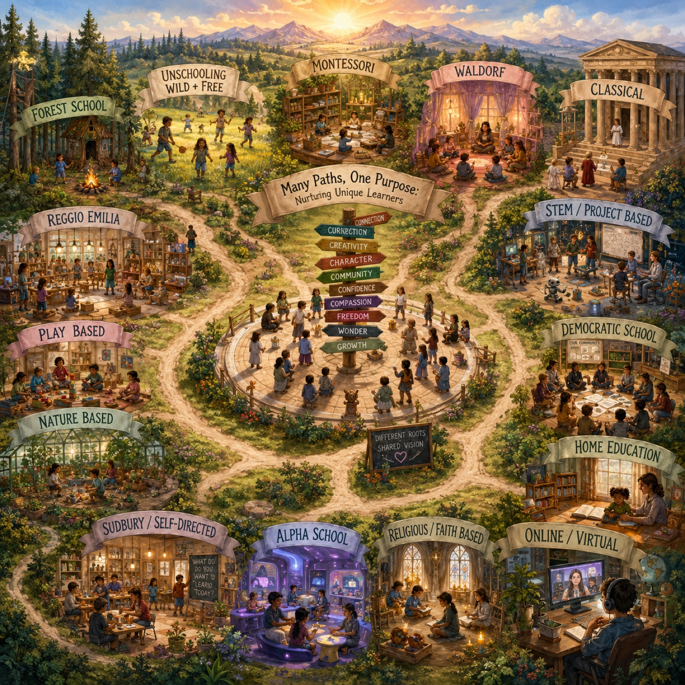
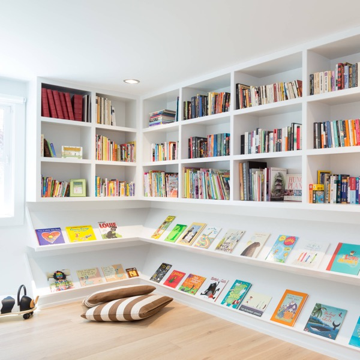
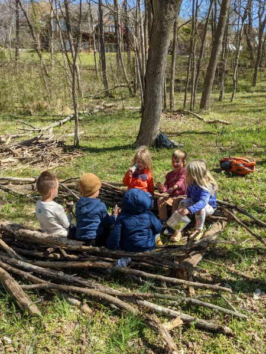
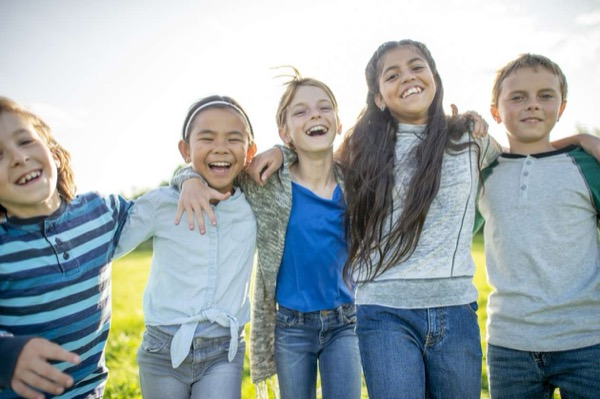

🎲 A game to play now
New here? What Conscious Parenting NI is ▾
For everyone who wants a better way — whether your children are in school or learning at home.
Conscious parenting across the whole of family life — learning, food, getting out, health and feelings. The best of every tradition and the best of the evidence, each with the real reason behind it. No dogma, no pressure. Take what fits, and leave the rest.
1
Check "For today"A few fresh, do-it-now ideas each day.
2
Open a pillarLearning, food, days out, health, feelings.
3
Try one small thingThat's the whole method.
For today
☀️ One small thing to do
💭 Something to ponder
🍳 Something nice to make together
Explore
The whole of raising a child, in a few clear places. Open one.

Education & Learning
The traditions, the schools map, weekly feast, rhythm, resources and games.

Books & Reading
Human stories, honestly good — read-alouds and audiobooks worth a child's time.
Learning Apps & Games
Calm, academic screen time done well — Khan Kids and more, best on E-ink.
Watching
If they're going to watch — a short, gentle, non-toxic list, and why to put it on the wall.

Food & Nutrition
Real-food recipes to make together — and what to feed a growing body.
Days Out & Things to Do
Great places to get out and explore, right across Northern Ireland.

Health & Body
Sleep, movement, active games, screens — a calm, first-principles take.

Emotions & Connection
Attachment, big feelings, discipline without punishment, brothers & sisters.